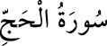

22-HAC SÛRESİ
Yetmiş sekiz âyettir. 19-24. âyetler hâriç Mekke’de nâzil olmuştur.
Bu sûrede, hac farizasının daha önce Hz. İbrahim tarafından başlatıldığından ve
Hz. Muhammed (s.a.) tarafından da devam ettirildiğinden bahsedildiği için sûreye
«Hac Sûresi» denilmiştir.